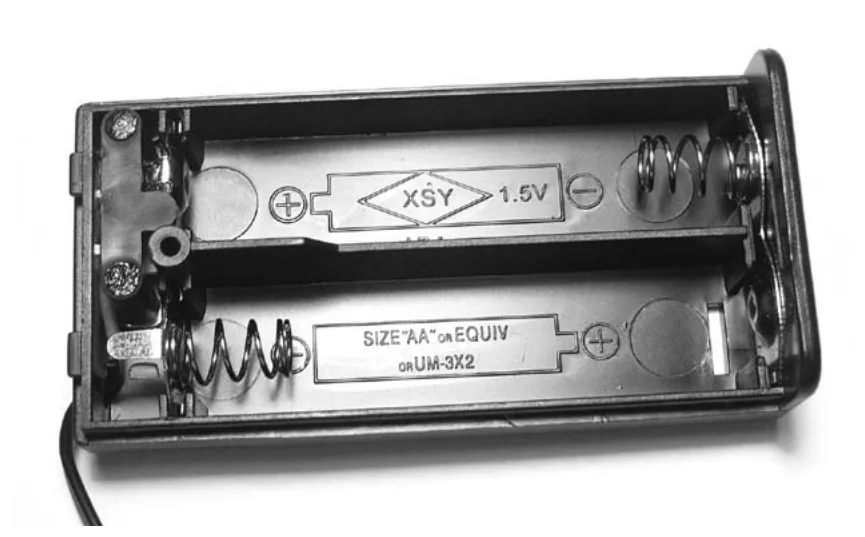
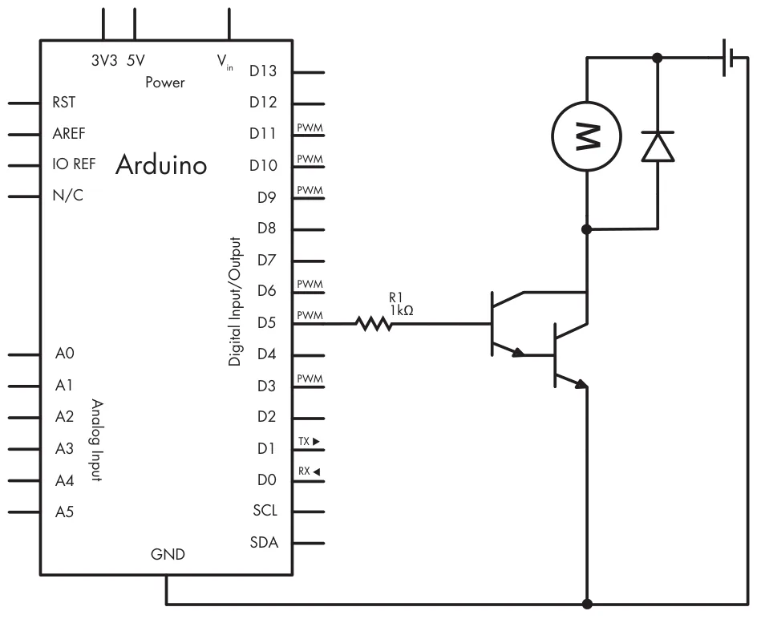

In this project, we’ll control the motor by adjusting the speed.
The Hardware
The following hardware is required:
- One small 3 V electric motor
- One 1 kΩ resistor (R1)
- One breadboard
- One 1N4004 diode
- One TIP120 Darlington transistor
- A separate 3 V power source
- Various connecting wires
- Arduino and USB cable
When working with motors, you must use a separate power source for them, because the Arduino cannot supply enough current for the motor in all possible situations. If the motor becomes stuck, then it will draw up to its stall current, which could be more than 1 amp. That’s more than the Arduino can supply, and if it attempts to supply that much current, the Arduino could be permanently damaged.
A separate battery pack is a simple solution. For a 3 V supply, a two-cell AA battery pack with flying leads will suffice, such as the one shown in Figure 12-8.

The Schematic
Assemble the circuit as shown in the schematic in Figure 12-9.

The Sketch
In this project, we’ll adjust the speed of the motor from still (zero) to the maximum and then reduce it back to zero. Enter and upload the following sketch:
// Project 39 - Controlling the Motor
void setup()
{
pinMode(5, OUTPUT);
}
void loop()
{
❶ for (int a=0; a<256; a++)
{
analogWrite(5, a);
❷ delay(100);
}
❸ delay(5000);
❹ for (int a=255; a>=0; a--)
{
analogWrite(5,a);
delay(100);
}
delay(5000);
}We control the speed of the motor using pulse-width modulation (as explained in Project 3). Recall that we can do this only with digital pins 3, 5, 6, 9, 10, and 11. Using this method, current is applied to the motor in short bursts: the longer the burst, the faster the speed, as the motor is on more than it is off during a set period of time. So at ❶, the motor speed starts from still and increases slowly; you can control the acceleration by changing the delay value at ❷. At ❸, the motor is running as fast as possible and holds that speed for 5 seconds. Then, from ❹, the process reverses and the motor slows to a stop.